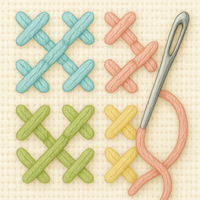

Создавай свои неповторимые схемы и выводи своё хобби на новый уровень!
Просто загрузи изображение любым доступным способом, настрой параметры и получи результат мгновенно.
Сохраняй все свои схемы, отслеживай суммарный прогресс и отдельно по каждому цвету.
Информация о схеме подскажет тебе какие нити тебе понадобятся и в каком количестве.
Кроме того ты можешь воспользоваться экспортом в PDF-файл и распечатать свою схему на нескольких листах А4.